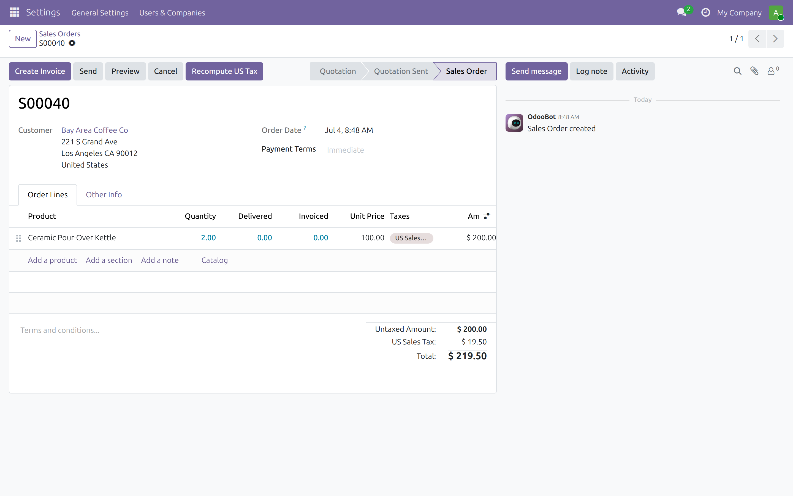
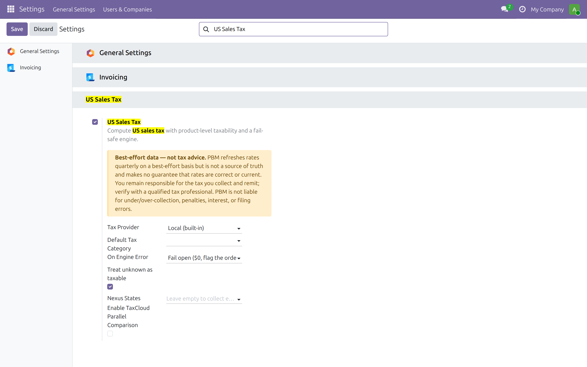
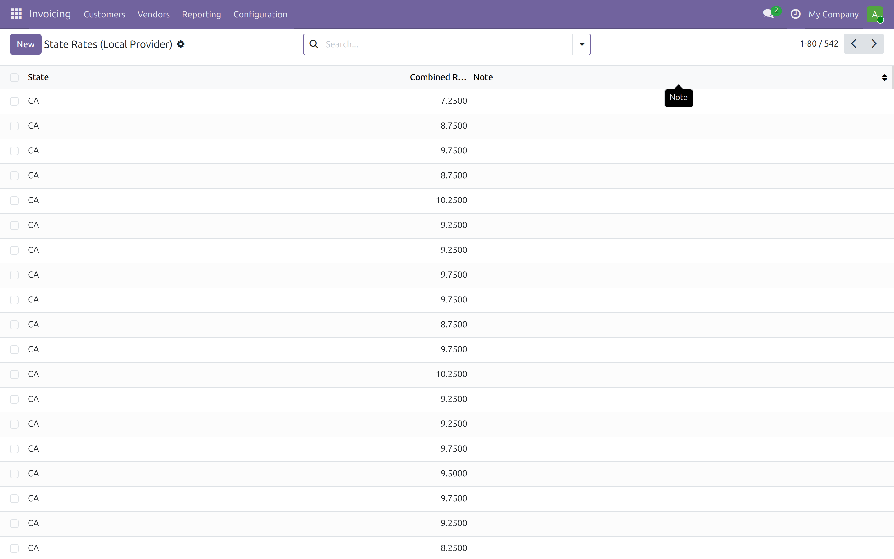

A maintained, Odoo-CE-native replacement for the removed native TaxCloud integration. Computes US sales tax with real product-level taxability (so food/grocery exemptions are correct) on a fail-safe engine that never breaks checkout.
Odoo Community lost its native tax integration, so most shops fall back to a single manual rate. But a buyer in Los Angeles owes 9.75%, San Francisco 8.625% — a flat 7.25% state rate quietly under-collects almost everywhere, and you owe the gap at audit.
The free tier ships the full California rate table — the state plus every county and incorporated city (the quarterly CDTFA snapshot, 500+ jurisdictions) — and computes the correct combined rate on your own server, with zero API calls. It just works, offline, at no cost.



Selling across state lines? Switch the provider to Hosted and add your Practical Business Machines API key for all other states, always-current rates, and the compliance tier — economic-nexus alerts, an exemption-certificate vault, and filing-ready reports. Flat monthly plans, no per-transaction surprises. If the key is ever missing, it quietly falls back to the bundled California data — it never breaks your checkout.
PBM refreshes sales-tax data quarterly on a best-effort basis to provide the most accurate data we can. Midas is not a system of record or a source of truth, and PBM makes no guarantee that rates, boundaries, or taxability determinations are correct or current. You remain solely responsible for the tax you collect, report and remit, and for verifying results with a qualified tax professional and the relevant taxing authorities. PBM is not liable for under- or over-collection, penalties, interest, or filing errors.
A Practical Business Machines product · practicalbusinessmachines.com